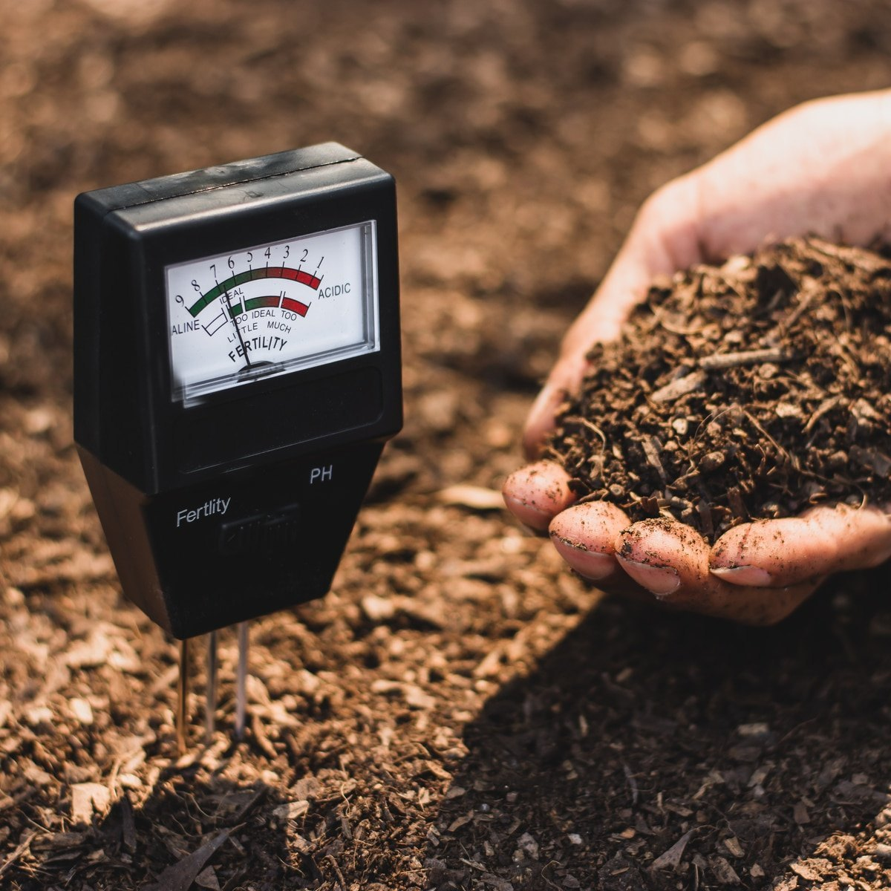

Understanding Acidic Soil
Acidic soil, characterized by a pH level below 7, can have a detrimental impact on plant growth. It affects nutrient availability and can lead to stunted development, yellowing of leaves, and overall poor health in plants.
Common Signs of Acidic Soil:
- Yellowing of leaves (chlorosis)
- Stunted growth in plants
- Poor nutrient absorption
- Increased presence of weeds
Impact on Plant Growth:
Plants require a specific pH range to absorb essential nutrients. In acidic soil, certain nutrients like nitrogen, phosphorus, and potassium become less available to plants, leading to nutrient deficiencies. This can result in poor crop yields and reduced overall plant health.
Remedies:
- Liming: Applying agricultural lime can help raise soil pH. Follow recommended rates based on soil test results.
- Adding Organic Matter: Incorporate organic materials such as compost, well-rotted manure, or leaf mold to improve soil structure and nutrient content.
- Choosing Acid-Tolerant Plants: Select plants that thrive in acidic conditions, such as azaleas, rhododendrons, and blueberries.
- Monitoring Nutrient Levels: Regularly test soil for nutrient levels and adjust fertilization accordingly. Acidic soils may require specific fertilizers.
Benefits of Remediating Acidic Soil:
Improving the pH of acidic soil offers several benefits, including enhanced nutrient availability, increased microbial activity, and improved plant growth. By implementing remediation strategies, farmers and gardeners can optimize soil conditions for better crop yields and healthier plants.
Images for Inspiration:

Additional Tips for Gardeners:
Gardeners dealing with acidic soil can take additional measures to ensure the health of their plants. Consider these tips:
- Regular Soil Testing: Conduct periodic soil tests to monitor pH and nutrient levels.
- Choose the Right Plants: Opt for plants that thrive in acidic conditions. Examples include hydrangeas, rhododendrons, and blueberries.
- Mulching: Apply organic mulch to help regulate soil temperature and moisture, promoting a healthier soil environment.
- Amendments: Use soil amendments like gypsum or elemental sulfur to modify soil pH gradually.